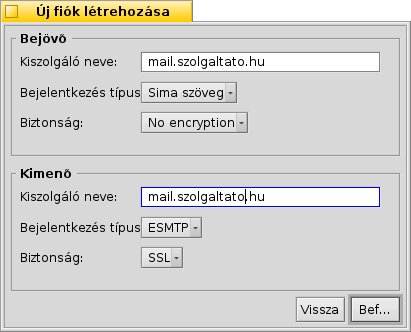
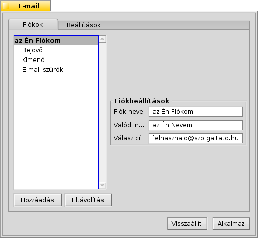
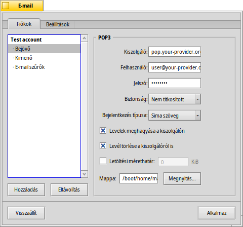
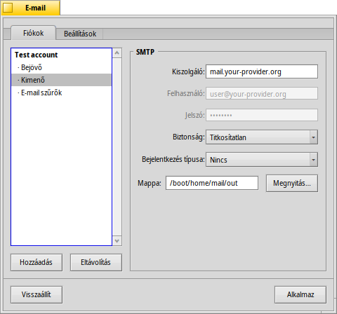
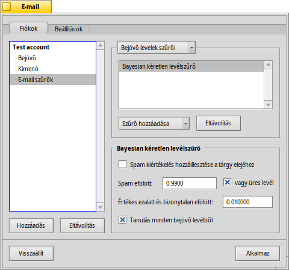
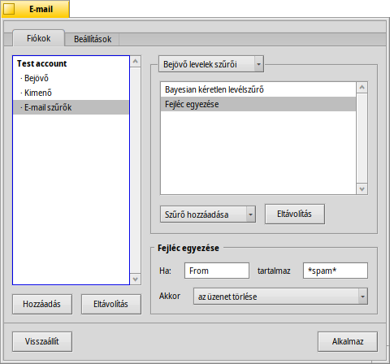
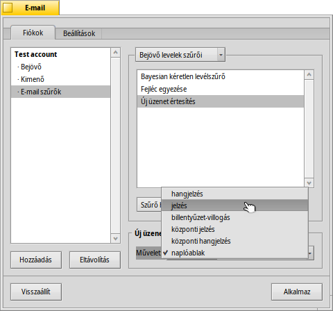
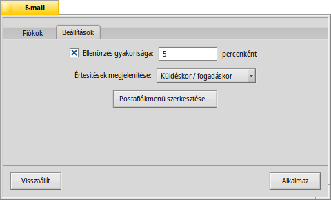
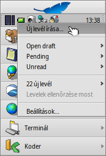

Magyar
Magyar Català
Català Deutsch
Deutsch English
English Español
Español Français
Français Italiano
Italiano Polski
Polski Português
Português Português (Brazil)
Português (Brazil) Română
Română Slovenčina
Slovenčina Suomi
Suomi Svenska
Svenska 中文 ［中文］
中文 ［中文］ Русский
Русский Українська
Українська 日本語
日本語| Index |
|
E-mail fiók létrehozása Fiók beállításai Bejövő levelek beállítása Kimenő levelek beállítása Figyelmeztetések és szűrők Levelező-rendszer beállítása |
 E-mail
E-mail
| Asztalsáv: | ||
| Útvonal: | /boot/system/preferences/E-mail | |
| Bellítások: | ~/config/settings/Mail/* |
A Haiku rendelkezik egy levelező rendszerrel (mail_daemon-ként is ismert), ami megadott időközönként letölti a leveleket, és egyenként elmenti egy szöveges fájlba. Letöltéskor a program a levél alapján beállítja annak jellemzőit, például a feladót, címzettet, tárgyat, stb., amelyekre ezután már lekérdezést is készíthetünk. Ezzel a megoldással könnyen válthatunk a levelező programok között, ugyanis az adatok és a beállítások ugyan azok maradnak.
A konfigurálást az E-Mail beállítások panelen hatjhatjuk végre.
 E-mail fiók létrehozása
E-mail fiók létrehozása
Nézzük végig a felhasználói fiók beállításának lépéset.
A gomb megnyomásával létrehozunk egy új, üres fiókot. Ekkor megnyílik egy panel, ahol a hozzáférési adatokat kell megadnunk:
Elsőként válasszuk ki, hogy hogyan akarjuk a leveleinket letölteni: vagy protokol használatával.
Ezután meg kell adnunk az E-mail címet, a felhasználói nevet és jelszót, a fiók elnevezését és az Ön valódi nevét.
Ha az e-mail címed egy ismert szolgáltatónál van, akkor a Haiku ismeri annak technikai adatait, mint például a kiszolgáló IP-címét. Egyéb esetben, kattintsunk a gombra, ahol megadhatjuk ezeket az adatokat:
Elsőként adjuk meg a kiszolgáló nevét, a bejelentkezés és a biztonság típusát mind a bejövő, mind pedig a kimenő levelek esetében. A szükséges információk megtalálhatóak a szolgálató oldalán.
Alább további információkat kaphatunk a különféle beállításokról és opciókról.
Fiók beállításai
A bal oldalon a fiók nevének kiválasztásakor néhány alap beállítás módosíható:
A Fiók neve egy elnevezés, ami megjelenik például az e-mail beállításoknál, illetve az értesítés-ablakokban. A Valódi név az, ami majd mint feladó jelenik meg a címzett levelezőprogramjában. A Válasz cím pedig az az e-mail cím, amire az Ön által küldött levélre válaszoláskor megszeretné azt kapni. Ez általában megegyezik azzal a címmel, amiről küldi a levelet.
Ha az e-mail fiókot csak küldésre vagy fogadásra szeretné használni, akkor a fiók nevén jobb gombbal kattintva ki- illetve bekapcsolhatja a megfelelő funkciót.
Bejövő levelek beállítása
Kattintson a listaelemre az e-mial fiók neve alatt a bejövő levelek beállításához.
Az első beállítás a , ahonnan a bejövő leveleket fogadja. Ha a szolgáltató egyéni portot használ, akkor azt is meg kell adni a kiszolgáló neve után kettősponttal elválasztva. Például: mail.szolgaltato.hu:1400.
Ezután a hozzáférési információkat adhatjuk meg: a Felhasználót és a Jelszót, és szükség esetén a Bejelentkezés típusát is módosíthatjuk, ami lehet illetve .
POP3 használatakor, ha több számítógépen is letöltjük a leveleinket, akkor ajánlott bejelölni a , és a opciót.
IMAP esetében pedig, ajánlott bejelölni a opciót. Továbbá, megadhatja az at, hogy csak az adott mappákat és almappákat szinkronizálja.
Arra is van lehetőségünk, hogy megadjuk a t. Ha a levél mérete nagyobb a megadottnál, akkor csak a levél fejléce töltődik le, majd eldöntheti, hogy letölti-e a levél többi részét vagy sem. FIGYELEM: jelenleg ha lassú az internetünk, akkor ezt az opciót ki kell kapcsolni, mert külünben a levélnek csak a fejléce fog letöltődni.
A bejövő levelek mappájának Útvonala is módosítható (alapértelemzett: /boot/home/mail/in/), ami hasznos lehet, ha több fiókkal is rendelkezünk, és mindegyik levelet külön akarjuk tárolni. Ugyanakkor a lekérdezések használatával is hasonló eredményt kaphatunk.
Kimenő levelek beállítása
A listaelemre kattintva a levélküldési beállításokat adhatjuk meg.
Elsőként a Kiszolgáló címét adjuk meg. Mint a bejövő leveleknél, itt is megadható a port. Például: mail.szolgaltato.hu:1200.
Ha szükséges bejelentkezni a küldés előtt, akkor válasszuk ki a Bejelentkezés típusa listából az )-t, majd adjuk meg a felhasználói nevünket és a jelszavunkat is. A másik lehetőség az, amikor a szolgáltató azonosítás céljából az új levelek ellenőrzését kéri küldés előtt: .
Itt is szintén megadhatjuk az Útvonalát az elküldött levelek mappájának (alapértelmezett: /boot/home/mail/out/).
Figyelmeztetések és szűrők
Az új levelekhez figyelmeztetéseket és szűrőket is állíthatunk be az listaelemre kattitnva. Több szűrő is hozzáadható a listához, amiknek a sorrendje határozza meg a kiválasztott műveletek végrehatását. A sorrend pedig a listában lévő szűrők mozgatásával módosítható.
Jelenleg három áll a rendelkezésünkre. Miután a szűrőt hozzáadjuk a listához, jelöljük ki azt hogy meg tudjuk adni a hozzá tartozó beállításokat.
Kéretlen levél szűrő (AGMS Bayesian)

A kéretlen levelek szűrése sztatisztikai alapon osztályozza a leveleket. Minden esetben egy 0 és 1 közötti értéket rendel a levelekhez, majd eldönthetjük, hogy mekkora értéktől jelölje a levelet kéretlennek.
Ezt az értéket hozzáfűzhetjük a levél címéhez is.
A levél szűrő tanulni is képes minden bejövő levélből. Természetesen nekünk kell megtanítanunk a programnak, hogy mely levelek azok, melyek hibásan lettek kéretlennek jelölve. További információk a Levelezés leírásánál.
A vel együtt automatikusan kigyomlálhatjuk a kéretlen leveleket.
Szabály szűrő

Ez a szűrő a levél fejlécét hasonlítja össze a megadott feltétellel, és végrehajtja a megadott műveletet is.
Az első oszlopban lévő mezőket ellenőrizheti a szűrő. Érvényes mezőnevek:
| A feladó neve. | ||
| A feladó e-mail címe. | ||
| A címzett e-mail címe. | ||
| A levélben megadott válasz-cím. | ||
| A levél fogadásának ideje. | ||
| A levél tárgya. | ||
| Azok a címek, akik másolatot kaptak a levélből. | ||
| Fiók neve. | ||
| A levél aktuális állapota. Alap esetben ez lehet: "Read" (olvasott), "Replied" (megválaszolt), "Sent" (elküldött), "Forwarded" (továbbított), "New" (új), vagy bármi, amit Te határoztál meg. Ugyanakkor amíg meg nem változtatod azt, a levelező rendszer újnak jelöl minden beérkezett levelet. | ||
| Fontosság (például: "urgent" (sürgős)). | ||
| Lényegében ugyan az, mint a "Subject" (tárgy), de a jelölések nélkül: például Re: vagy Fwd:. | ||
| Az alapján, hogy a kéretlen levél szűrő miként sorolta be, lehet üres (nem besorolt) vagy tartalmazhatja a "Genuine" (valós) illtve "Spam" (kérelten) jelzőt. | ||
| Ez egy olyan szám, amit a kéretlen levél szűrő állapított meg a levélhez. Ez a szám tudományos formában jelenik meg, ahol a 1.065e-12 az jelenti, hogy a 1.065 osztva 10 a tizenkettedikennel, ami ebben az esetben 0.000000000001065. |
A második beviteli mező tartalmazza a keresendő mintát. Itt megadhatunk általános kifejezéseket, melyek remekül variálhatóak, de sajnos sokszor nagyon is túlbonyolíthatóak. Kicsit utána olvasva rájön, hogy nem is olyan bonyolult a keresési minták használata.
Az előugró menüből megadhatunk egy műveletet, amit a rendszer végrehajt a minta egyezésekor. Elmozgathatjuk vagy törölhetjük a levelet, "Olvasott"-nak vagy más állapotúnak jelölhetjük, vagy beállíthatjuk, hogy melyik fiókból fogunk válaszolni rá.
Figyelemztetés új levelek érkezésekor

Több módon is kaphatunk értesítést új levelek érkezésekor. A menüben több, kombinálható lehetőség közül is válaszhatunk:
| Nincs figyelmeztetés. | ||
| Lejátsza azt a hangot, ami az "Új E-mail" eseményhez lett beállítva a Hangok beállításánál minden egyes levél érkezésekor. | ||
| Egy üzenet-ablakot jelenít meg minden egyes új levél érkezésekor. | ||
| A nagy betűk (Caps Lock) LED villogtatása. | ||
| Egy üzenet-ablakot jelenít meg mindig, amikor levél érkezik. | ||
| Lejátsza azt a hangot, ami az "Új E-mail" eseményhez lett beállítva a Hangok beállításánál, de csak egyszer, amikor levél érkezik. | ||
| A naplóablak megjelenítése. |
Kimenő levelek szűrője
Jelenleg csak egy szűrő áll rendelkezésre a kimenő levelek esetében: fortune.
Ezzel a levél elküldése előtt véletlenszerűen egy vicces "szerecse sütit" csatolhatunk hozzá. Akár ki is próbálhatod, ha a Terminálban kiadod a fortune parancsot.
Levelező-rendszer beállítása
A bejövő és kimenő kiszolgálók és a szűrők beállítása után most lássuk, hogy a levelező rendszer milyen beállításokkal rendelkezik.
A Levelek ellenőrzése részben beállíthatjuk, hogy milyen gyakorisággal ellenőrizze az új leveleket.
Ha betárcsázós internettel rendelkezünk, ajánlott bejelölni a és a jelölőnégyzetet az állandó ellenőrzés elkerülése érdekében.
A levelező rendszer rendelkezik egy állapot ablakkal, ami megadható, hogy mikor jelenjen meg: , , vagy .
Győződjünk meg arról is, hogy az be legyen jelölve, ugyanis csak akkor fogja tudni használni a levelező rendszer szolgáltatásaikat.
A megnyitja a /boot/home/config/Mail/Menu Links/ mappát. Minden mappa és lekérdezés(!) vagy azok hivatkozása, ami ebben a mappában szerepel, az megjelenik a postaláda ikon helyi menüjében a Polcon az Asztalsávon.
A menüből ezen kívül az alábbiakat is elérjük: , és .
A SHIFT lenyomva tartásával a menü megnyitásakor további funkciók is elérhetőek:
| Egy almenüt kapunk, ahol egy fiók új leveleit ellenőrizhetjük le. | ||
| A még el nem küldött leveleket küldi el, de nem keres új leveleket. | ||
| A teljes levelező rendszer (mail_daemon) leállítása. |
Maga a postaláda ikonja is jelzi az új leveleket: az ikon megváltozik egy levéllel teli postaládára.